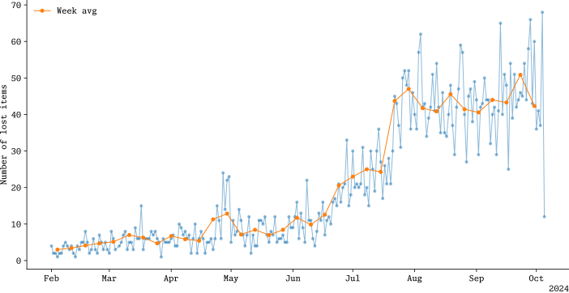
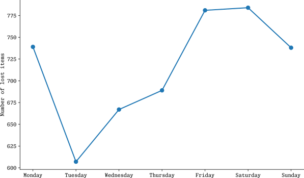
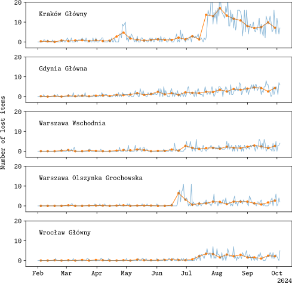
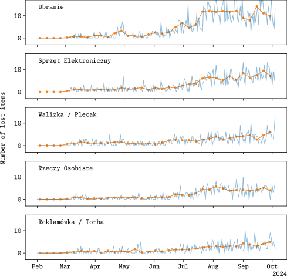
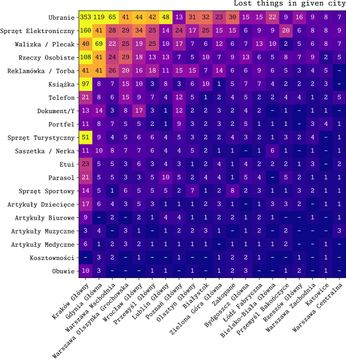
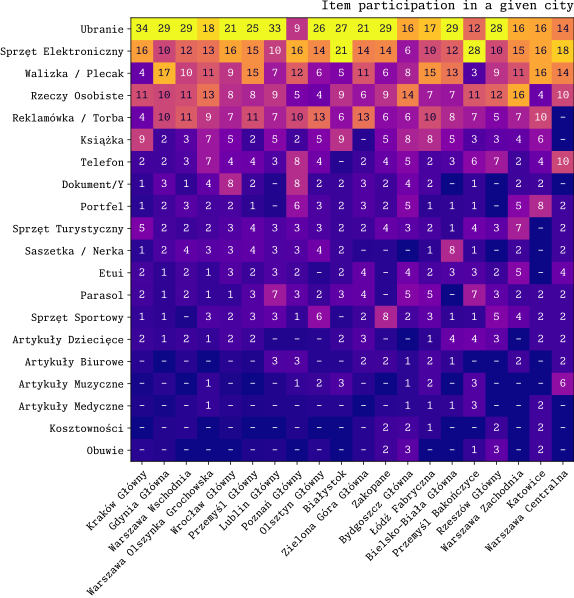
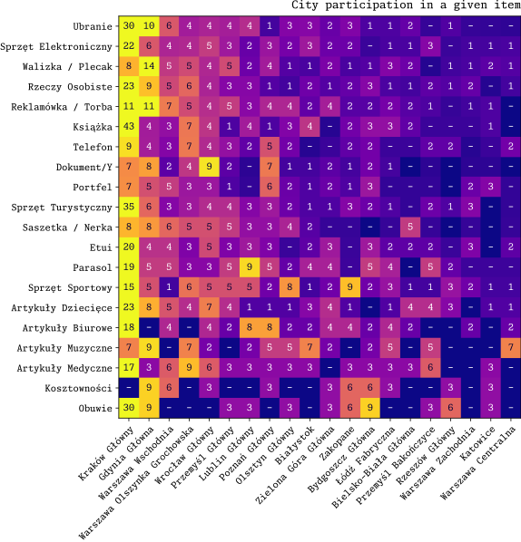

Lost and found in trains - part II
Summer has officially finished so its time to look at the data once more.
First thing I have looked into was the frequency items.

Now we can see, that there was huge growth around the beginning of summer, but it does not seem to go down any time soon. It could suggest that the system of reporting has reached its saturation and it will stay like it for long.I have already mentioned the peak around the end of April, which is connected to the Polish national holidays. But now we can see a small peak around the end of September. It is not as significant as the previous peak, but it does also have a nice explanation. Namely academic year is starting so students are coming back to big cities, usually by trains. It also means that traveling season has ended for all. Lets see in few months if it is really the case.
With more data it seems that more people travel on Fridays than Sundays. Tuesday is still the lowest in terms of number of lost items.

I have also updated other figures. Not much has changed, but the trends I have already spotted are still visible. I only added the rolling week average and limit myself to 5 top cities.





Maybe the next step should be to check local trains? Koleje Dolnośląskie have something similar, but its harder to get older items.
MS